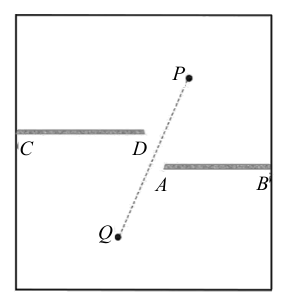
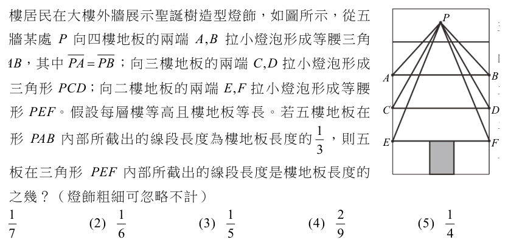
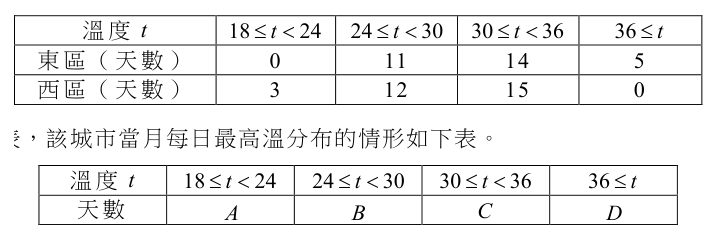
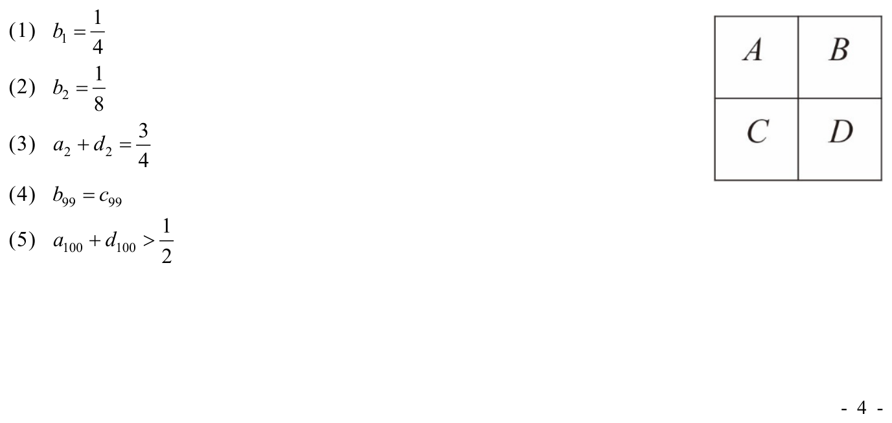
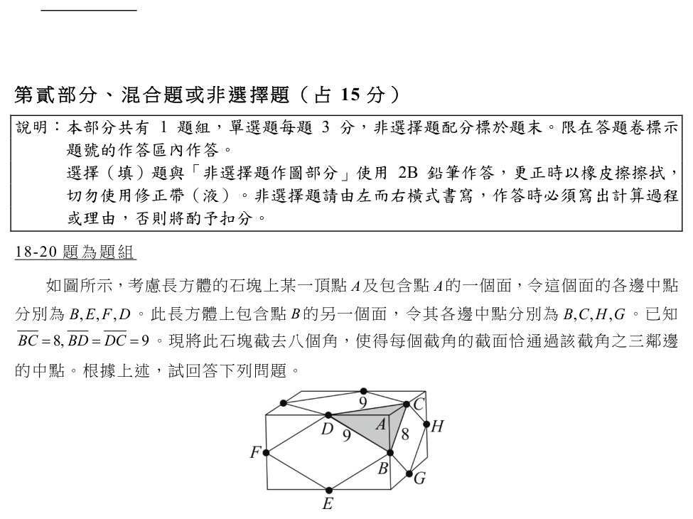

開卷有益 ／
學科能力測驗 ／ 數學B ／ 113 年113 年學科能力測驗數學B試題與答案
這一頁是民國 113 年學科能力測驗數學B的整份歷屆試題，共 20 題，題目與標準答案出自大考中心 學測歷年試題（依著作權法 §9，考試試題不受著作權保護），其中 20 題附有詳解。以下逐題列出題幹、選項與答案；要計時作答或記錄成績，請用線上練習。
線上作答這一科 →
全部 20 題
第 1 題
某遊戲共有 210 位玩家，每位玩家均持有寶石，其中持有 1 顆的有 1 位，持有 2 顆的有 2 位，依此類推，持有 20 顆寶石的有 20 位。試問這些玩家每人持有寶石數量的第 90 百分位數為下列哪一個選項？
（A） 16（B） 17（C） 18（D） 19（E） 20答案：（D）
詳解與考點 正解：本題求第 90 百分位數，資料共有 210 筆，90% 對應位置為 210×90/100=189。因 189 是整數，依百分位數規則取第 189 筆與第 190 筆資料的平均。持有 18 顆者累積人數為 1+2+…+18=18×19/2=171；再加上持有 19 顆的 19 人，累積人數為 171+19=190。因此第 189 筆與第 190 筆都在「持有 19 顆」這一組，百分位數為 (19+19)/2=19，D 為正解。
A：16 顆以前的累積人數為 1+2+…+16=16×17/2=136，第 189、190 筆不在此範圍，A 錯誤。
B：17 顆以前的累積人數為 1+2+…+17=17×18/2=153，第 189、190 筆不在此範圍，B 錯誤。
C：18 顆以前的累積人數是 171，尚未到第 189 筆；把 90% 的位置誤停在累積到 18 顆，是漏算第 172 至第 190 筆皆屬 19 顆組，C 錯誤。
E：20 顆組從第 191 筆開始，因為累積至 19 顆已是第 190 筆，所以第 189、190 筆不會是 20，E 錯誤。
本題考點：百分位數——先算資料位置 n×p/100，位置為整數時取該筆與下一筆的平均；累積次數判準——先以 1+2+…+k=k(k+1)/2 找出資料所在組，再讀取該組數值。
第 2 題
已知 \(a, b, c\) 為實數，且滿足 \(1 < a < 10\)、\(b = \log a\)、\(c = \log b\)，試選出正確的選項。
（A） \(c < 0 < b < 1\)（B） \(0 < c < 1 < b\)（C） \(0 < c < b < 1\)（D） \(1 < c < b\)（E） \(c < b < 0\)答案：（A）
詳解與考點 正解：本題先由 1<a<10 判定常用對數 b 的範圍，再利用 0<b<1 時對數為負來判定 c。因為 1<a<10，所以 log 1<log a<log 10，即 0<b<1。再由 c=log b，且 0<b<1，所以 c<0。因此 c<0<b<1。A：符合此大小關係，故 A 為正解。
B：此項要求 0<c，但 0<b<1 時 log b<0，所以 c 不可能為正，B 錯誤。
C：此項同樣要求 0<c，忽略了 0<b<1 的對數為負，C 錯誤。它看起來對，是因為 b 已在 0 與 1 之間，容易誤以為再取對數後 c 也仍在此區間。
D：此項要求 1<c，然而 c<0，與計算結果相反，D 錯誤。
E：此項要求 b<0，但已由 1<a<10 得 0<b<1，E 錯誤。
本題考點：常用對數的單調性——1<a<10 時，0<log a<1；對數正負判準——真數大於 1 時對數為正，真數介於 0 與 1 時對數為負。
第 3 題
某射擊遊戲的玩家要避開障礙物射擊目標。今在遊戲畫面中設立一直角坐標系，以長方形螢幕左下角點 \(O\) 為原點，螢幕下方的邊緣為 \(x\) 軸、螢幕左方的邊緣為 \(y\) 軸，目標物放在點 \(P(12,10)\)。畫面中有兩面牆（牆厚度可忽略不計），一面牆由點 \(A(10,5)\) 水平延伸到點 \(B(15,5)\)，另一面牆由點 \(C(0,6)\) 水平延伸到點 \(D(9,6)\)，如右圖之示意圖。若玩家在點 \(Q\) 可直線射擊點 \(P\) 的目標物，不會被兩面牆阻擋。下列哪一個選項有可能是點 \(Q\) 的坐標？

（A） \((6,3)\)（B） \((7,3)\)（C） \((8,5)\)（D） \((9,1)\)（E） \((9,2)\)答案：（B）
詳解與考點 正解：本題須檢驗 QP 線段在兩面水平牆 y=5、y=6 的交點 x 坐標；只有交點落在牆的 x 範圍內才會被阻擋。B：Q=(7,3)時，QP 的斜率＝(10-3)／(12-7)=7/5。到 y=5 時，x=7+(5-3)×5/7=7+10/7=59/7≈8.43，不在上牆的 [10,15]；到 y=6 時，x=7+(6-3)×5/7=7+15/7=64/7≈9.14，不在下牆的 [0,9]，故可直線射擊，B 為正解。
A：Q=(6,3)時，QP 的斜率＝(10-3)／(12-6)=7/6。到 y=6 時，x=6+(6-3)×6/7=6+18/7=60/7≈8.57，落在下牆的 [0,9]，被下牆阻擋，A 錯誤。
C：Q=(8,5)時，QP 的斜率＝(10-5)／(12-8)=5/4。到 y=6 時，x=8+(6-5)×4/5=8+4/5=8.8，落在下牆的 [0,9]，被下牆阻擋，C 錯誤。
D：Q=(9,1)時，QP 的斜率＝(10-1)／(12-9)=3。到 y=5 時，x=9+(5-1)／3=9+4/3=31/3≈10.33，落在上牆的 [10,15]，被上牆阻擋，D 錯誤。
E：Q=(9,2)時，QP 的斜率＝(10-2)／(12-9)=8/3。到 y=5 時，x=9+(5-2)×3/8=9+9/8=81/8≈10.13，落在上牆的 [10,15]，被上牆阻擋，E 錯誤。
本題考點：直線與線段相交——先由兩點求斜率，再代入指定 y 值求交點 x；障礙判準——交點的 x 必須同時落在該牆的端點範圍內，才算被牆阻擋。
第 4 題
已知坐標平面上有一向量 \(\vec{v}=(-2,3)\) 及兩點 \(A\)、\(B\),且點 \(A\) 的 \(x\) 坐標和 \(y\) 坐標、點 \(B\) 的 \(x\) 坐標和 \(y\) 坐標都落在區間 \([0,1]\) 內,試問 \(\left|\vec{v}+\overrightarrow{AB}\right|\) 的最大值為下列哪一個選項?
（A） \(\sqrt{13}\)（B） \(\sqrt{17}\)（C） \(3\sqrt{2}\)（D） \(5\)（E） \(\sqrt{2}+\sqrt{13}\)答案：（D）
詳解與考點 正解：題幹要求最大長度，先把點 A、B 的坐標限制轉成向量分量範圍。設 A=(xA,yA)、B=(xB,yB)，則 AB=(xB-xA,yB-yA)=(Δx,Δy)。因 xA、xB、yA、yB 都在 [0,1]，所以 Δx、Δy 都在 [-1,1]。v+AB=(-2+Δx,3+Δy)。要使長度最大，第一分量取 Δx=-1，得到 -2-1=-3；第二分量取 Δy=1，得到 3+1=4。因此 v+AB=(-3,4)，其長度=√((-3)²+4²)=√(9+16)=√25=5，D 正確。
A：√13 可由只計算原向量長度 √((-2)²+3²)=√13 得到，錯在沒有加入 AB 的可變分量。
B：√17 不能同時使兩個分量的絕對值達到最大；最大時應為 (-3,4)，平方和是 9+16=25，不是 17。
C：3√2 的平方為 18，低於可達到的 25，表示未將 Δx 取為 -1、Δy 取為 1。
E：√2+√13 是把 |AB|≤√2 與 |v|=√13 直接相加的上界，並非本題的實際最大值；向量方向須由分量同時驗證。它看起來合理，是因為三角不等式給出 |v+AB|≤|v|+|AB|，但等號須兩向量同向，本題無法達成。
本題考點：向量長度極大化——先由坐標範圍求 Δx、Δy∈[-1,1]；對每個分量選使絕對值最大的端點，再以長度=√(x²+y²) 計算；三角不等式的上界必須另驗證是否可取等號。
第 5 題
設二次函數 \( f(x) = x^2 + bx + c \)，其中 \( b, c \) 為實數。已知 \( f(x-2) = f(-x-2) \) 對任意實數 \( x \) 均成立，且當 \( -3 \le x \le 1 \) 時，\( f(x) \) 的最大值會是最小值的 4 倍，則 \( f(x) \) 的最小值是下列哪一個選項？
（A） \( 0 \)（B） \( \dfrac{5}{3} \)（C） \( 3 \)（D） \( 4 \)（E） \( 6 \)答案：（C）
詳解與考點 正解：條件 f(x-2)=f(-x-2) 表示自變數 x-2 與 -x-2 對稱於 -2，故應先用二次函數對稱軸求 b，再以區間端點距離判最大值。令 t=x-2，則另一個自變數為 -x-2=-t-4，兩者中點為 [t+(-t-4)]/2=-2，所以對稱軸為 x=-2。f(x)=x²+bx+c 的對稱軸為 x=-b/2，因此 -b/2=-2，得 b=4。 f(x)=x²+4x+c=(x+2)²+c-4，所以頂點為 (-2,c-4)，最小值為 c-4。區間 -3≤x≤1 中，頂點 -2 在區間內，故最小值是 f(-2)=(-2)²+4(-2)+c=4-8+c=c-4。端點到對稱軸的距離為 |-3-(-2)|=1、|1-(-2)|=3，x=1 較遠，故最大值為 f(1)=1²+4(1)+c=5+c。 依題意「最大值是最小值的 4 倍」，5+c=4(c-4)=4c-16，移項得 21=3c，c=7。最小值=c-4=7-4=3，故 C 為正解。
A：若最小值為 0，則 c-4=0，c=4；此時最大值=5+4=9，不是 4×0=0，A 錯誤。
B：若最小值為 5/3，則 c=5/3+4=17/3；最大值=5+17/3=32/3，而 4×5/3=20/3，B 錯誤。
D：若最小值為 4，則 c=8；最大值=5+8=13，而 4×4=16，D 錯誤。
E：若最小值為 6，則 c=10；最大值=5+10=15，而 4×6=24，E 錯誤。
本題考點：二次函數對稱軸——f(x)=x²+bx+c 的對稱軸為 x=-b/2，先由函數值相等的對稱條件求軸；區間極值——頂點在區間內取最小，最大值比較兩端點到對稱軸的距離，距離較遠者函數值較大。
第 6 題
某大樓居民在大樓外牆展示聖誕樹造型燈飾，如圖所示，從五樓外牆某處 \(P\) 向四樓地板的兩端 \(A, B\) 拉小燈泡形成等腰三角形 \(PAB\)，其中 \(\overline{PA}=\overline{PB}\)；向三樓地板的兩端 \(C, D\) 拉小燈泡形成等腰三角形 \(PCD\)；向二樓地板的兩端 \(E, F\) 拉小燈泡形成等腰三角形 \(PEF\)。假設每層樓等高且樓地板等長。若五樓地板在三角形 \(PAB\) 內部所截出的線段長度為樓地板長度的 \(\dfrac{1}{3}\)，則五樓地板在三角形 \(PEF\) 內部所截出的線段長度是樓地板長度的幾分之幾？（燈飾粗細可忽略不計）

（A） \(\dfrac{1}{7}\)（B） \(\dfrac{1}{6}\)（C） \(\dfrac{1}{5}\)（D） \(\dfrac{2}{9}\)（E） \(\dfrac{1}{4}\)答案：（A）
詳解與考點 正解：題幹的截線與底邊平行，利用相似三角形，截線長與 P 到截線的距離成比例。設每層樓高為 h，一樓地板為 y=0，P 的高度為 yp。PAB 的底邊在 y=3h，五樓地板在 y=4h，故(yp−4h)／(yp−3h)＝1/3。3yp−12h=yp−3h，2yp=9h，yp=9h/2。PEF 的底邊在 y=h，五樓截線比＝(yp−4h)／(yp−h)＝(9h/2−4h)／(9h/2−h)＝(h/2)／(7h/2)＝1/7，故 A 正確。
B：1/6 與相似比 1/7 不符。
C：1/5 未以 P 到二樓底邊的高作分母，故錯誤。
D：2/9 與計算出的(h/2)÷(7h/2)不符。
E：1/4 是把截線長只與樓層差直接比較的誤算；相似比應以 P 到平行底邊的完整距離為準。
本題考點：相似三角形——平行截線長比等於頂點到截線距離比；設元判準——先由已知截線比解出 P 的高度，再代入另一個相似比。
第 7 題
有一城市分為東、西兩區。兩區各有一個氣溫偵測站，該城市當天的最高溫（單位： 攝氏度）是取這兩區當天氣溫的最大值來記錄。下表顯示東、西兩區某月（共30 天） 每日最高溫分布的情形。 溫度t 24 18 24 t ≤< 東區（天數） 0 西區（

東西區天數分布表 溫度 t 18≤t<24 24≤t<30 30≤t<36 36≤t 東區（天數） 0 11 14 5 西區（天數） 3 12 15 0
城市最高溫分布表(A/B/C/D) 溫度 t 18≤t<24 24≤t<30 30≤t<36 36≤t 天數 A B C D
本題選項為上圖中的 A／B／C／D，請對照圖片作答。
答案：（C）
詳解與考點 正解：本題的城市最高溫是同日東、西兩區溫度的最大值，應先固定兩端溫度帶，再檢驗中間各帶能否逐日配對。A 溫度帶：城市最高溫＜24，須東、西兩區同日都＜24；東區＜24 為 0 天，所以 A 帶天數＝0。D 溫度帶：城市最高溫≥36，只要任一區≥36 即計入；東區≥36 為 5 天，西區為 0 天，所以 D 帶天數＝5。C：選項 C 的分布為（0，9，16，5），總天數＝0+9+16+5=30，且兩端已分別符合 0 與 5，中間 B、C 帶可由逐日配對形成，故 C 為正解。
A：選項 A 不符合最低帶必為 0 天或最高帶必為 5 天的固定條件，不能是城市最高溫分布。
B：選項 B 不符合最低帶必為 0 天或最高帶必為 5 天的固定條件，不能是城市最高溫分布。
D：選項 D 不符合最低帶必為 0 天或最高帶必為 5 天的固定條件，不能是城市最高溫分布。
E：選項 E 不符合最低帶必為 0 天或最高帶必為 5 天的固定條件，不能是城市最高溫分布。
本題考點：最大值分布——城市每日最高溫＝max（東區溫度，西區溫度），最低帶須兩區同時落入該帶，最高帶則任一區落入即計入；分布檢驗——先由兩端固定天數，再驗證各帶天數和是否為 30 與逐日配對是否可行。
第 8 題 （多選）
已知正實數數列 \(a, b, c, d, e\) 為等比數列，且 \(a < b < c < d < e\)，試選出下列為等比數列的選項。
（A） \(a, -b, c, -d, e\)（B） \(e, d, c, b, a\)（C） \(\log a, \log b, \log c, \log d, \log e\)（D） \(3^a, 3^b, 3^c, 3^d, 3^e\)（E） \(abc, bcd, cde\)答案：（A）（B）（E）
詳解與考點 正解：設原數列為 a、ar、ar²、ar³、ar⁴；因 a<b<c<d<e 且皆為正，所以 r>1。A：a、−ar、ar²、−ar³、ar⁴ 的相鄰比依序為 −r、−r、−r、−r，為等比數列。B：e、d、c、b、a=ar⁴、ar³、ar²、ar、a，相鄰比皆為 1/r，為等比數列。E：abc=a³r³，bcd=a³r⁶，cde=a³r⁹；bcd÷abc=r³，cde÷bcd=r³，為等比數列，故選 A、B、E。
C：log a、log b、log c、log d、log e 的相鄰差皆為 log r，是等差數列；相鄰比不一定相同，C 錯誤。
D：3^a、3^b、3^c、3^d、3^e 的相鄰比為 3^(b−a)、3^(c−b)、3^(d−c)、3^(e−d)。原數列各項差不一定相等，所以這些比值不一定相同，D 錯誤。它看起來對，是因為 a、b、c、d、e 本身規律排列，但等比數列不保證指數的差為定值。
本題考點：等比數列判定——相鄰兩項比值相同；倒序與交錯變號——分別使公比變成 1/r 與 −r；對數轉換——等比數列取對數後為等差數列，不可誤判仍為等比。
第 9 題 （多選）
已知多項式 \( f(x) \) 除以 \( x^2+5x+1 \) 後，所得出的商式為 \( x^3+7x^2+x+3 \)，試選出下列可能為 \( f(x) \) 的選項。
（A） \( 2(x^3+7x^2+x+3)(x^2+5x+1) \)（B） \( (x^3+7x^2+x+3)(x^2+5x+1)-x \)（C） \( (x^3+7x^2+x+3)(x^2+5x+1)+x^2 \)（D） \( (x^3+7x^2+x+4)(x^2+5x+1)-x \)（E） \( (x^3+7x^2+x+4)(x^2+5x+1)-x^2 \)答案：（B）（E）
詳解與考點 正解：題幹已給定商式 q（x）＝x³＋7x²＋x+3；合法表示必為 f（x）＝q（x）（x²＋5x+1）＋r（x），且 r（x）次數嚴格小於 2。B：餘式為 −x，次數為 1<2，商式仍是 q（x），故正確。E：令 d（x）＝x²＋5x+1，原式＝［q（x）＋1］d（x）−x²＝q（x）d（x）＋［d（x）−x²］＝q（x）d（x）＋5x+1；餘式 5x+1 的次數為 1<2，故正確。
A：f（x）＝2q（x）d（x），餘式雖為 0，但商式為 2q（x），不是題給 q（x），故錯誤。
C：餘式 x² 的次數等於除式次數 2，還可再除，x²＝1×d（x）−5x−1，商式會變為 q（x）＋1，故錯誤。它看起來對，是因為形式上已寫成商×除式加某式，卻忽略餘式次數須嚴格較低。
D：商式為 q（x）＋1 且餘式 −x，無法把多出的 d（x）併入一次餘式，故錯誤。
本題考點：多項式除法——f＝除式×商式＋餘式；餘式判準——餘式次數必嚴格小於除式次數；商式檢驗——整理後須精確回到題給商式。
第 10 題 （多選）
有兩個光點在一條長度為 120 公分的直線形軌道上移動，碰到端點就反向繼續移動。一開始兩點分別在軌道的兩端相向而動，光點 A、光點 B 的移動速率分別為每秒 5 公分及每秒 10 公分。試選出正確的選項。
（A） 兩個光點第一次相遇的位置，與其中一個端點的距離為 40 公分（B） 光點 A 的位置呈週期現象，週期為 24 秒（C） 當光點 A 回到 A 的出發點時，光點 B 也在 B 的出發點（D） 兩個光點第二次相遇在其中一個端點上（E） 兩個光點在軌道上共有 3 個不同的相遇位置答案：（A）（C）（D）
詳解與考點 正解：軌道長 120 公分，兩點先相向，第一次相遇用合速 5+10=15 公分／秒；之後以往返展開判斷。A：第一次相遇時間=120/15=8 秒，A 行進距離=5×8=40 公分，故距其出發端 40 公分，正確。C：A 往返一次路程=120×2=240 公分，週期=240/5=48 秒；48 秒時 B 行進=10×48=480 公分=4×120 公分，已走完整數個單程且在 B 出發端，正確。D：用展開法，第二次相遇滿足 5t+10t=120×3，得 15t=360、t=24 秒；A 的位置=5×24=120，B 也在端點 120，故第二次相遇在端點，正確。
B：A 的週期應為 240/5=48 秒，不是只走單程 120/5=24 秒；24 秒時 A 在另一端，未回到原位置。
E：相遇位置依序為 40 公分、120 公分，之後重複，只有 2 個不同位置，不是 3 個。
本題考點：直線往返運動——先以合速求首次相遇，t=軌道長／（兩速率和）；週期＝往返總路程／速率，位置回到起點才算完成週期；反射問題可用展開法，把往返路徑改為直線累積路程。
第 11 題 （多選）
某國家過去五年的碳排放總量，由第 1 年的 \(X\) 億公噸二氧化碳當量（CO2e）下降至第 5 年的 \(Y\) 億公噸二氧化碳當量（CO2e），達到每年平均減碳 5% 的效益，亦即 \(Y=(1-0.05)^4 X\)。將五年的碳排放總量與年成長率記錄如下表，其中第 \(n\) 年碳排放成長率 \(=\dfrac{（第\ n\ 年碳排放總量）-（第\ n-1\ 年碳排放總量）}{第\ n-1\ 年碳排放總量}\)，\(n=2,3,4,5\)。試選出正確的選項。
五年碳排放總量與年成長率 第 1 年 第 2 年 第 3 年 第 4 年 第 5 年 碳排放總量（億公噸 CO2e） \(X\) \(A\) \(B\) \(C\) \(Y\) 碳排放年成長率 \(-0.07\) \(p\) \(q\) \(r\)
（A） \(A=0.93X\)（B） \(Y \leq 0.8X\)（C） \(\dfrac{-0.07+p+q+r}{4}=-0.05\)（D） \(\sqrt[4]{\dfrac{Y}{X}}-1=-0.05\)（E） \(0.93(1+p)(1+q)(1+r)=(0.95)^4\)答案：（A）（D）（E）
詳解與考點 正解：題幹給出每年平均減碳5%，這是四年連續乘上0.95的等比關係，故先用各年成長因子連乘。A：第2年成長率為−0.07，所以A=X(1−0.07)=0.93X，正確。D：Y=(0.95)^4X，兩邊除以X得Y/X=(0.95)^4；開4次方得⁴√(Y/X)=0.95；再減1得⁴√(Y/X)−1=−0.05，正確。E：第2年至第5年的成長因子依序為0.93、1+p、1+q、1+r，所以Y/X=0.93(1+p)(1+q)(1+r)；又Y/X=(0.95)^4，故0.93(1+p)(1+q)(1+r)=(0.95)^4，正確。
B：Y/X=(0.95)^4=0.81450625，所以Y=0.81450625X>0.8X，不符合Y≤0.8X，錯誤。
C：−0.05是四年連乘成長因子的幾何平均結果，不是−0.07、p、q、r的算術平均；因此不能寫成(−0.07+p+q+r)/4=−0.05，錯誤。它看起來對，是因為「每年平均」容易被誤認為算術平均。
本題考點：複利與連續成長——每期成長率r以1+r連乘；幾何平均判準——總成長因子開n次方後再減1，才是每期平均成長率；數值檢驗——將(0.95)^4算成0.81450625，可直接比較0.8。
第 12 題 （多選）
小明寫了一個程式讓機器人在2 2 × 的棋盤中移動，如圖所示。每執行一次，程式會選 擇「上、下、左、右」中的某一個方向，不同方向被選擇的機率均相等，並指示機器人 依該方向移動一格，但若選到的方向會跑出棋盤，則機器人該次會停在原地。每次執行

本題選項為上圖中的 A／B／C／D，請對照圖片作答。
答案：（A）（D）
詳解與考點 正解：題幹的 2×2 棋盤每次向四方向等機率移動，出界即停留；從 A 出發需直接列轉移。A：一步到 B 只有向右一種方向，機率＝1/4，故正確。D：棋盤對 A、D 的對角線對稱，從 A 出發時 B、C 的機率地位完全對稱；若第 n 步機率為 b_n=c_n，經一次相同對稱轉移後仍相等，因此任意 n 均有 b_n=c_n，特別是 b_99=c_99，故正確。
B：第 2 步到 B 的路徑可由 A 停留後右移，或先右移後在 B 停留等情形計算，b_2=1/4，不是 1/8，故錯誤。
C：第 2 步 a_2=3/8、d_2=1/8，所以 a_2+d_2=3/8+1/8=1/2，不是 3/4，故錯誤。
E：由對稱性 b_100=c_100，且總機率 a_100+b_100+c_100+d_100=1；本題轉移下 a_100+d_100=1/2，並非大於 1/2，故錯誤。
本題考點：馬可夫轉移——每一步依方向機率更新各格機率，出界機率累積在原格；對稱判準——初始分布與轉移規則對稱時，對稱位置在任意步數機率相等。
第 13 題
已知 \(a, b, c, d\) 為實數，且 \(\begin{bmatrix} 1 & -1 \\ 3 & -2 \end{bmatrix}\begin{bmatrix} a \\ b \end{bmatrix} = \begin{bmatrix} 1 \\ 0 \end{bmatrix}\)。若 \(\begin{bmatrix} 1 & -1 \\ 3 & -2 \end{bmatrix}\begin{bmatrix} 2a+1 \\ 2b+1 \end{bmatrix} = \begin{bmatrix} c \\ d \end{bmatrix}\)，則 \(c - 3d\) 的值為 (13-1)(13-2)。
標準答案未收錄
詳解與考點 參考方向：令 M=[[1,−1],[3,−2]]，已知 M[a,b]ᵀ=[1,0]ᵀ。所求 M[2a+1,2b+1]ᵀ=M(2[a,b]ᵀ+[1,1]ᵀ)=2[1,0]ᵀ+[1−1,3−2]ᵀ=[2,0]ᵀ+[0,1]ᵀ=[2,1]ᵀ，故 c=2、d=1，c−3d=2−3=−1。填答 13-1 為負號、13-2 為 1。此為 AI 整理之解題方向，非官方標準答案，須對照官方評分原則。
第 14 題
某校全體高三學生都有報考學測數學 A 或數學 B，在這些學生中只報考數學 A 的學生占全體高三學生的 \(\dfrac{3}{10}\)。報考數學 A 的學生中有 \(\dfrac{5}{8}\) 的學生同時也報考數學 B。則只報考數學 B 的學生在該校所有報考數學 B 的學生中所占的比例為 \(\dfrac{(14\text{-}1)}{(14\text{-}2)}\)。（化為最簡分數）
標準答案未收錄
詳解與考點 參考方向：設全體為 1。只考 A 占 3/10；考 A 者中 5/8 兼考 B，故只考 A（3/8）對應 3/10，得考 A 總數=（3/10）÷（3/8）=4/5。只考 B=1−4/5=1/5；兼考=（5/8）×（4/5）=1/2；報考 B 總數=1/5+1/2=7/10。所求=（1/5）÷（7/10）=2/7，故 14-1=2、14-2=7。此為 AI 整理之解題方向，非官方標準答案，須對照官方評分原則。
第 15 題
已知 \( P_1 \)、\( P_2 \)、\( Q_1 \)、\( Q_2 \)、\( R \) 為平面上相異五點，其中 \( P_1 \)、\( P_2 \)、\( R \) 三點不共線，且滿足 \( \overrightarrow{P_1 R} = 4\overrightarrow{P_1 Q_1} \)，\( \overrightarrow{P_2 R} = 7\overrightarrow{P_2 Q_2} \)，則 \( \overrightarrow{Q_1 Q_2} = \) (15-1) \( \overrightarrow{P_1 Q_1} + \) (15-2)(15-3) \( \overrightarrow{P_2 Q_2} \)。
標準答案未收錄
詳解與考點 參考方向：以 R 為橋接。由 P₁R=4P₁Q₁ 得 Q₁R=R−Q₁=(3/4)(R−P₁)=3P₁Q₁；由 P₂R=7P₂Q₂ 得 Q₂R=R−Q₂=(6/7)(R−P₂)=6P₂Q₂。則 Q₁Q₂=Q₂−Q₁=Q₁R−Q₂R=3P₁Q₁−6P₂Q₂。故 15-1=3、15-2 為負號、15-3=6。此為 AI 整理之解題方向，非官方標準答案，須對照官方評分原則。
第 16 題
在空間坐標系中，有一球心坐標在 \( O(0,0,0) \) 且北極點在 \( N(0,0,2) \) 的地球儀。已知球面上點 \( A \) 坐標為 \( \left( \dfrac{\sqrt{3}}{2}, \dfrac{1}{2}, \sqrt{3} \right) \)，赤道上距離點 \( A \) 最遠的點為點 \( P \)，則在通過點 \( A \)、點 \( P \) 的大圓上，這兩點的劣弧長為 \( \dfrac{(16\text{-}1)\,\pi}{(16\text{-}2)} \)。（化為最簡分數）
標準答案未收錄
詳解與考點 參考方向：球心 O、半徑 2，赤道為 z=0 大圓。A=(√3/2,1/2,√3) 的水平投影為單位向量 (√3/2,1/2)，赤道上最遠點取反方向 P=(−√3,−1,0)。cos∠AOP=(A·P)/4=(−3/2−1/2)/4=−1/2，故 ∠AOP=120°=2π/3，劣弧長=2×(2π/3)=4π/3。故 16-1=4、16-2=3。此為 AI 整理之解題方向，非官方標準答案，須對照官方評分原則。
第 17 題
在一圓的圓周上取12 個等分點並以順時針方向依序編1 號至12 號。由這12 個點任取 3 點為頂點所形成的三角形中，三個內角的角度由小到大會成等差數列的三角形有 17-1 ○ ○ 17-2 個。

本題選項為上圖中的 A／B／C／D，請對照圖片作答。
標準答案未收錄
詳解與考點 參考方向：圓周 12 等分，每段弧對應圓周角 15°。三點分圓成三段弧（份數和 12），三內角為各份數×15°，和 180°。由小到大成等差⟺中項 60°⟺某段恰 4 份。三段份數 {x,4,z}、x+z=8：相異組 {1,4,7}、{2,4,6}、{3,4,5} 各對應 12×6/3=24 個，{4,4,4} 正三角形 4 個，合計 76。故填 76（17-1=7、17-2=6）。此為 AI 整理之解題方向，非官方標準答案，須對照官方評分原則。
第 18 題
截角後的石塊為幾面體？（單選題，3 分）
（A） 八面體（B） 十面體（C） 十二面體（D） 十四面體（E） 十六面體答案：（D）
詳解與考點 正解：截角後計算面數時，原有各面不會消失，還要加上每個被截頂點新產生的截面。原長方體有 6 個面、8 個頂點。截去 8 個角，每個角切一刀新增 1 個三角形截面，新增面數＝8×1=8；原來 6 個矩形面各截去 4 角後變為八邊形，面數仍是 6。因此總面數＝6+8=14。D：十四面體，故 D 為正解。
A：八面體只算到新增的 8 個三角形截面，漏掉截角後仍保留的 6 個原面，實際為 8+6=14，A 錯誤。它看起來對，是因為每個頂點恰好新增一個面，但截角是改變原面形狀，不是刪除原面。
B：十面體比正確的 14 面少 4 面；逐項計算仍應為原面 6 加新增面 8，6+8=14，B 錯誤。
C：十二面體比正確的 14 面少 2 面；原面數 6 與新增截面數 8 相加為 14，不是 12，C 錯誤。
E：十六面體比正確的 14 面多 2 面；每個 8 個頂點只新增 1 個截面，新增數是 8，不是 10，所以總數為 6+8=14，E 錯誤。
本題考點：截角多面體面數——截去一個頂點會新增一個截面，原有面只改變邊數而不減少面數；計數判準——總面數＝原面數＋被截頂點數，本題為 6+8=14。
第 19 題
試求 \(\triangle BCD\) 的面積。（非選擇題，4 分）
標準答案未收錄
詳解與考點 參考方向：B、C、D 為頂點 A 三鄰邊中點。設 A 在原點、三邊沿軸，B=(p/2,0,0)、C=(0,q/2,0)、D=(0,0,s/2)。由 BC=8、BD=DC=9 得 p²+q²=256、p²+s²=q²+s²=324，解出 p=q=8√2、s=14。△BCD 為等腰（BD=DC=9、底 BC=8），高=√(81−16)=√65，面積=½×8×√65=4√65。此為 AI 整理之解題方向，非官方標準答案，須對照官方評分原則。
第 20 題
試求 \(\overline{AD}\) 的長度與四面體 \(ABCD\) 的體積，並求此四面體以 \(\triangle BCD\) 為底面時，頂點 \(A\) 到底面的高度。（角錐體積 \(=\dfrac{\text{底面積}\times\text{高}}{3}\)）（非選擇題，8 分）
標準答案未收錄
詳解與考點 參考方向：承上題取 A=(0,0,0)、B=(4√2,0,0)、C=(0,4√2,0)、D=(0,0,7)，三邊兩兩垂直。AD=7。體積=⅙×AB×AC×AD=⅙×4√2×4√2×7=112/3。以 △BCD（面積 4√65）為底，由 V=⅓×底面積×高，得 112/3=⅓×4√65×h，解得 h=28/√65=28√65/65。故 AD=7、體積=112/3、高=28√65/65。此為 AI 整理之解題方向，非官方標準答案，須對照官方評分原則。
其他年度
回到學科能力測驗數學B的年度總覽 ，
或到學科能力測驗題庫首頁 看其他科目。
題目與標準答案出自大考中心 學測歷年試題（依著作權法 §9，考試試題不受著作權保護）。依中華民國《著作權法》第 9 條第 1 項第 5 款，
依法令舉行之各類考試試題不得為著作權之標的，得自由利用。詳解為 AI 整理的學習輔助，
並非官方標準答案 ；中華民國會修訂，引用前請對照現行版本查證。